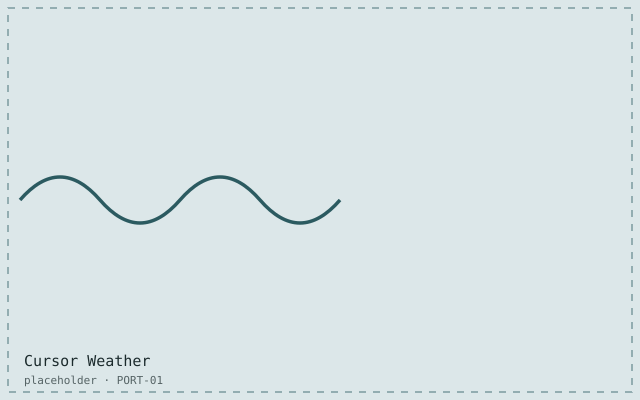
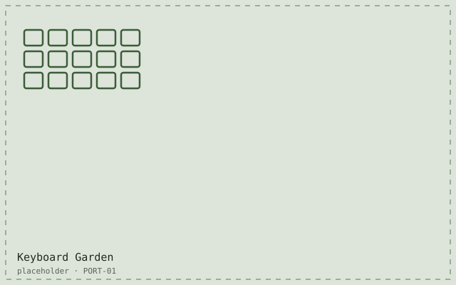
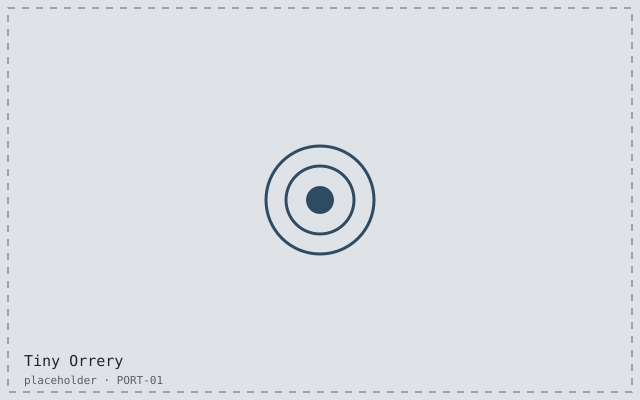
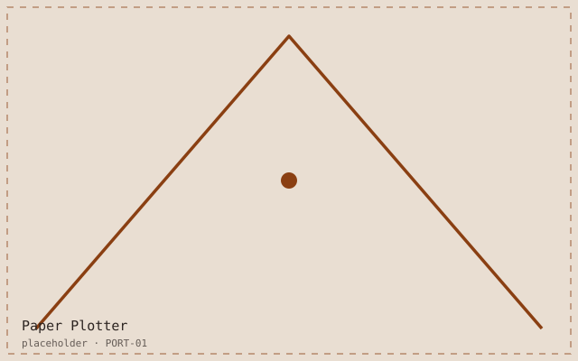
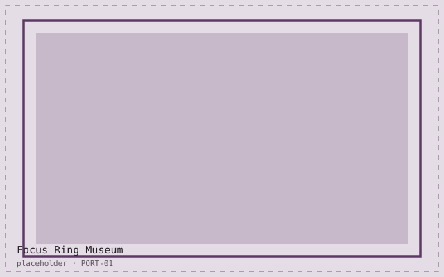
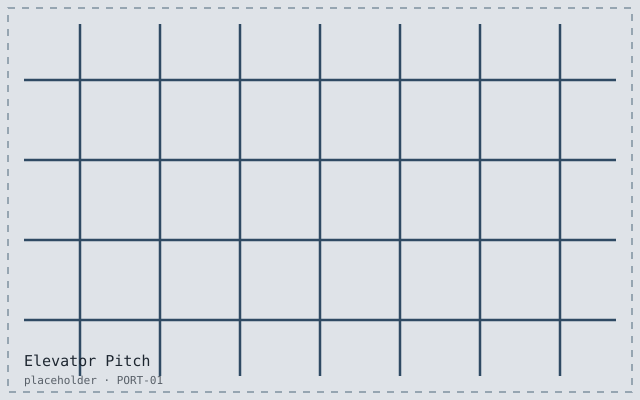
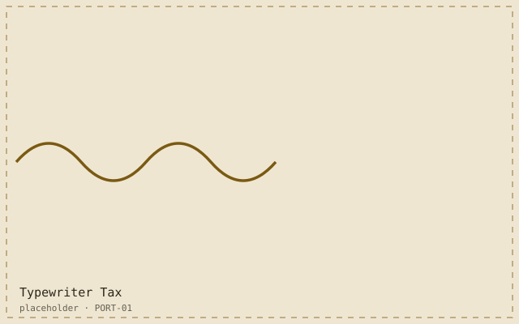
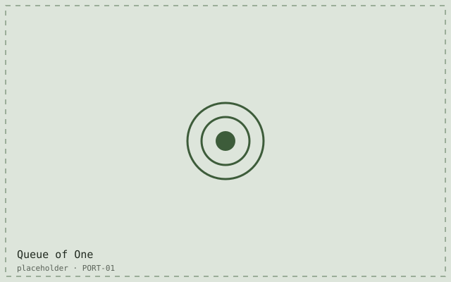
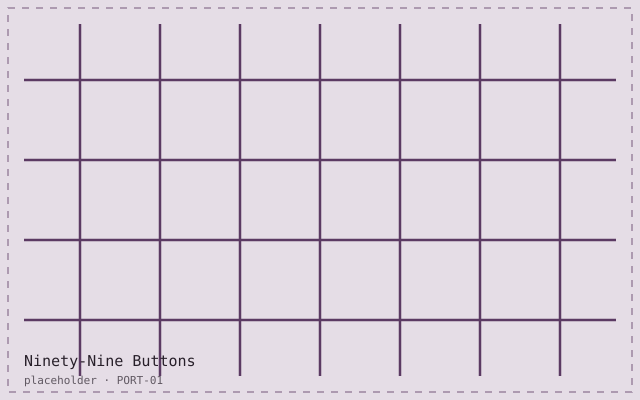

Work
Five case studies and four toys that live on other people’s servers. Filter by tag, or search the titles and summaries.
Project index
9 projects
-

Cursor Weather
A pointer that carries its own microclimate: drizzle, fog and the occasional hailstorm, drawn on a 2 KB canvas layer.
-

Keyboard Garden
A split keyboard whose keys sprout a plant for every thousand words written, with a printed companion card for screen reader users.
-

Tiny Orrery
A hand-cranked SVG solar system for a middle-school science unit. Keyboard operable, printable, and legible at 400% zoom.
-

Paper Plotter
A pen plotter queue that turns a week of git commits into a plotted broadsheet, printed every Friday at 4pm.
-

The Focus Ring Museum
Eighty-one focus indicators, collected, measured against WCAG 2.2 and labelled like butterflies in a case.
-

Elevator Pitch (opens an external site)
A lift that travels one floor for every scroll of the page. It never reaches the top floor.
-

Typewriter Tax (opens an external site)
A writing app that charges you a key press for every adverb. Balance payable in semicolons.
-

Queue of One (opens an external site)
A 40-line task runner for people who only ever have one task. Downloaded, inexplicably, 90,000 times.
-

Ninety-Nine Buttons (opens an external site)
Ninety-nine buttons, each with a different hover state, all keyboard reachable in under four seconds.
Nothing matches that combination.
Looking for something specific?
Older client work from 2011–2019 is not on this site, mostly because the sites no longer exist. I can talk you through any of it, or send a PDF of the parts that are still relevant.